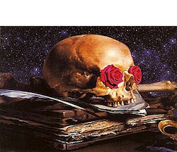

The Grateful Dead were an eclectic US rock band active from 1965 to 1995. They were famous primarily for their laid-back hippie aesthetic, which originated in the flower-power counterculture of sixties San Francisco. Their rabidly devoted fanbase is also pretty notorious. In my opinion, however, the most notable thing about the Grateful Dead (hereafter sometimes ‘the Dead’) was their improvisation during live performances, as ordinary songs were stretched out and stitched together into rich polyphonic jams that, even decades later, are still a delight to dive into.
Dark Star is probably the most famous of the Dead’s live numbers. The song’s main theme is structured around a loose A to G chord vamp, with more or less E-Dorian melodic improvisation superimposed. (If you don’t know what that means: all the instruments are playing notes from the same key, but the lead guitar is thinking of it as a jazzy E minor, while the others are thinking of it as a bluesy A major.) Early Dark Stars were certainly adventurous, but tended to stick to this general form. (The one from 2/27/69 is on their live album Live/Dead, and it’s very good, and pretty representative.)
Throughout the next few years Dark Stars got weirder, and the sprawling jams that followed often bore little resemblance to each other. The song was written with two verses, but often they only sang one. Sometimes (like on 11/30/73) there was no verse at all. By ‘74 they sort of got bored with it (see the wonderful 6/28/74, where it appears for five minutes or so in a thirty minute otherwise-untitled instrumental section between Let it Grow and U.S. Blues). However, that A vs. E tension always remained central to the song’s identity and continued to give it its wonderful psychedelic character.
My favorites are from ‘72, which is an uncontroversial Grateful Dead opinion if there ever was one, but what can you do. It’s a bit like saying your favorite food is steak and lobster.

The following is a list of the band’s members during the period 1969-1974. The important ones to know (at least for our purposes) are in bold.